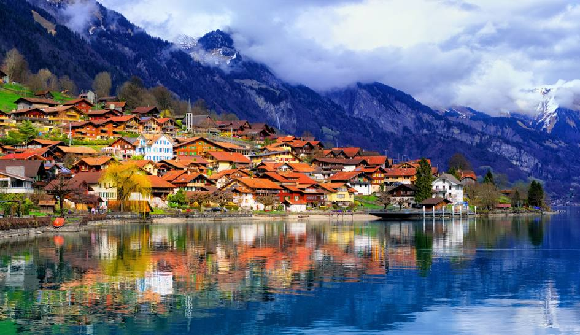

Switzerland, officially the Swiss Confederation, is a landlocked country located in west-central Europe. It is bordered by Italy to the south, France to the west, Germany to the north, and Austria and Liechtenstein to the east. Switzerland is geographically divided among the Swiss Plateau, the Alps and the Jura; the Alps occupy the greater part of the territory,whereas most of the country's nearly 9 million people are concentrated on the plateau, which hosts its largest cities and economic centres, including Zurich, Geneva, and Lausanne.
Switzerland is a federal republic composed of 26 cantons, with federal authorities based in Bern. It has four
main linguistic and cultural regions: German, French, Italian and Romansh. Although most Swiss are German-speaking,national identity is fairly cohesive, being rooted in a common historical background, shared values such as federalism
and direct democracy,and Alpine symbolism.Swiss identity transcends language, ethnicity, and religion, leading to Switzerland being described as a Willensnation ("nation of volition") rather than a nation state.
Switzerland originates from the Old Swiss Confederacy established in the Late Middle Ages as a defensive and commercial alliance the Federal Charter of 1291 is considered the country's founding document. The confederation steadily expanded and consolidated despite external threats and internal political and religious strife. Swiss independence from the Holy Roman Empire was formally recognised in the Peace of Westphalia in 1648.The confederation was among the first and few republics of the early modern period, and the only one besides San Marino to survive the Napoleonic Wars.
Switzerland remained a network of self-governing states until 1798, when revolutionary France invaded and imposed the centralist Helvetic Republic. Napoleon abolished the republic in 1803 and reinstated a confederation. Following the Napoleonic Wars, Switzerland restored its pre-revolutionary system, but by 1830 faced growing division and conflict between liberal and conservative movements; this culminated in a new constitution in 1848 that established the current federal system and enshrined principles such as individual rights, separation of powers, and parliamentary bicameralism.
Switzerland has maintained a policy of armed neutrality since the 16th century and has not fought an international war since 1815. It joined the United Nations only in 2002 but pursues an active foreign policy that includes frequent involvement in peace building and global governance. Switzerland is the birthplace of the Red Cross and hosts the headquarters or offices of most major international institutions, including the WTO, the WHO, the ILO, FIFA, the WEF, and the UN. It is a founding member of the European Free Trade Association (EFTA) but not part of the European Union (EU), the European Economic Area, or the eurozone; however, it participates in the European single market and the Schengen Area.